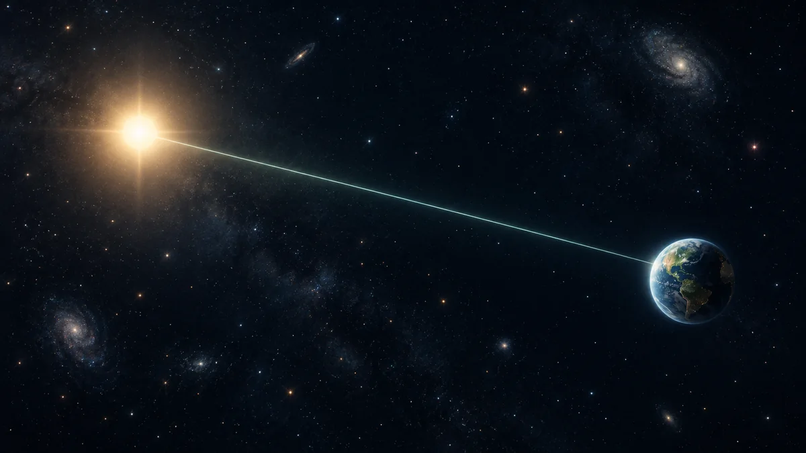

1광년은 시간일까요, 거리일까요?
이름에 ‘년’이 들어가는 광년을 거리의 단위로 읽고, 달과 별을 볼 때 빛이 떠나온 과거를 함께 보게 되는 까닭을 알아봅니다.

달력 대신 자를 떠올려 보세요
‘그 별은 10광년 떨어져 있다’는 말을 들으면 별까지 가는 데 10년이 걸린다는 뜻처럼 느껴질 수 있어요. 하지만 광년은 시간을 재는 단위가 아니라 거리를 재는 단위입니다. 진공에서 빛이 1년 동안 나아가는 길이를 하나의 긴 자로 삼은 것이죠.
빛은 1초에 약 30만 킬로미터를 갑니다. 그 속도로 1년 동안 간 거리가 약 9조 4,600억 킬로미터, 곧 1광년이에요. ‘년’은 자의 길이를 정하는 데 쓰였을 뿐, 광년 자체가 나이나 기간을 나타내지는 않습니다.[1]
우주선의 도착 시각은 별개예요
예를 들어 가까운 우주 공간에서 두 지점 사이가 10광년이라고 해볼까요. 이는 빛이 그 사이를 건너는 데 약 10년이 걸릴 만큼 멀다는 뜻입니다. 어떤 우주선이든 10년 만에 도착한다는 여행 시간표는 아니에요. 실제 이동 시간은 우주선의 속도와 경로 등에 달려 있습니다.
킬로미터로 쓰면 너무 길어지는 별 사이의 거리를, 광년으로 표현하면 비교하기 쉬워집니다. ‘4광년’과 ‘40광년’은 서로 다른 크기의 길이를 뜻하며, 별이 만들어진 지 4년이나 40년이 되었다는 뜻도 아닙니다.[3]
눈에 도착한 빛에는 지연이 있어요
여기서 거리와 시간이 다시 만납니다. 별을 본다는 것은 그 별에서 출발한 빛을 눈이나 망원경으로 받는 일이기 때문이에요. 빛이 오는 데 시간이 걸렸다면, 오늘 받은 빛에는 그만큼 앞선 시점의 별 모습이 담겨 있습니다.
이 원리는 먼 은하에만 적용되지 않아요. 달빛도 달에서 지구까지 오는 데 약 1.3초가 걸립니다. 고개를 들어 본 달은 아주 짧지만 이미 지나간 순간의 모습인 셈이죠. 망원경이 시간을 되돌린 것이 아니라, 이동하던 빛이 지금 도착한 것입니다.[2]
같은 밤에도 서로 다른 과거를 봐요
태양을 제외한 가장 가까운 별도 4광년 넘게 떨어져 있어, 우리는 몇 년 전 그 별을 떠난 빛을 받습니다. 거리가 더 먼 별에서는 더 오래전에 출발한 빛이 도착하겠죠. 하늘을 한 번에 바라보아도 모든 천체의 동일한 ‘현재’를 모아 보는 것은 아닙니다.
그렇다고 별이 반드시 이미 사라졌다고 결론 낼 수는 없어요. 빛의 이동 시간이 알려주는 것은 우리가 어느 시점의 모습을 받았는지입니다. 별의 이후 상태를 판단하려면 그 별에 관한 별도의 관측과 연구가 필요합니다.[2]
별을 찾은 다음, 빛의 길을 생각해요
ORBIT의 ‘별지도 읽는 법’으로 방향과 고도를 익힌 뒤 익숙한 별을 찾아보세요. 오늘 눈에 닿은 빛이 언제 길을 나섰을지 떠올리면, 하늘의 작은 점이 긴 여행의 도착점으로 보일 거예요. 광년은 그 여행의 거리를, 빛의 이동 시간은 우리가 보는 모습의 시점을 설명합니다.[1]
이 이야기를 확인한 자료
- NASA Science · What is a light-year? ↗자료 확인 2026.09.27 · 원문 새 탭
- NASA Science · How Does Webb See Back in Time? ↗자료 확인 2026.09.27 · 원문 새 탭
- NASA Science · Webb FAQs ↗자료 확인 2026.09.27 · 원문 새 탭
자료의 날짜와 적용 범위를 함께 확인해주세요. 오류 제보하기 →